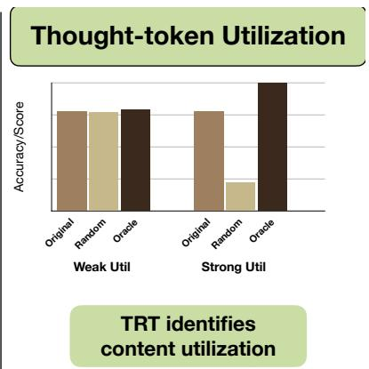
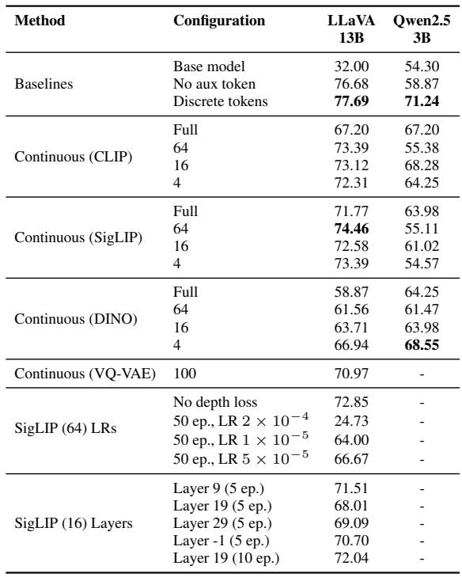

Ablate-to-Validate：很多连续视觉 thought token 的收益可能来自长度、锚点或正则，而不一定来自 token 内容本身。
这是一个诊断工具型论文：以后看 latent visual token 方法时，应该要求内容替换消融。
先说结论。很多连续视觉 thought token 的收益可能来自长度、锚点或正则，而不一定来自 token 内容本身。 这是一个诊断工具型论文：以后看 latent visual token 方法时，应该要求内容替换消融。


核心问题
这篇论文不是在提出一个更强的视觉 token 模块，而是在追问一个更基础的问题：VLM 加了连续/latent thought token 之后，准确率上涨到底是因为模型读懂了 token 内容，还是因为多了一段固定位置、额外 token budget 或训练正则？这个问题对视觉自监督和多模态预训练很关键，因为很多方法会把“中间视觉表征”包装成推理能力，但只报告最终 accuracy 很难证明这些中间表征真的被消费。
作者把问题收窄到可干预的形式：固定 prompt、图像、token 数量和解码过程，只替换中间 thought-token span。如果模型真的依赖其中的视觉信息，随机化或清零应该明显伤害性能，注入 oracle/ground-truth token 应该带来可解释收益；如果性能几乎不变，说明 token 更可能是位置锚点、预算扩容或训练脚手架。
方法拆解
Token Replacement Test（TRT）是一组推理时替换实验，而不是新的训练目标。它把视觉 thought span 看成一个可替换对象，分别测试 identity re-injection、zero replacement、random replacement、distribution-matched random、first-repeat、count-matched variant 和 oracle/ground-truth injection。
- Zero / random：移除或破坏 token 内容，用来检验模型是否对内容敏感。
- Distribution-matched random：匹配预测 token 的边际分布，避免“随机向量尺度不对”导致误判。
- First-repeat / count-matched：保留 span 位置和 token 数量，但去掉 token 多样性，拆开 token budget 与 token content 的贡献。
- Oracle / GT injection：在有监督视觉目标时注入更好的 token，检验模型是否有能力利用高质量视觉信号。
为了让替换实验有清楚语义，作者构造了 relative depth reasoning testbed：给图像上的 3/4/5 个点，问哪一个离相机更近。depth span 有连续版本，也有离散 codebook token 版本；连续 token 可来自 SigLIP2、CLIP、DINOv2 等冻结特征空间，离散版本用 VQ-VAE codebook。这样可以把“预测 depth token”和“使用 depth token”分开测试。
主要贡献
第一，论文把 latent visual token 的有效性从“有没有涨点”改成“内容替换后是否还有效”的诊断问题，这比单纯追加 benchmark 更有解释力。第二，它给出一个可复用的 TRT 协议，后续任何声称引入视觉 thought token、perception token 或 continuous visual reasoning token 的方法，都可以按同一套替换实验报告结果。第三，作者把 TRT 同时放到自建 depth-span testbed 和现成 visual-thinking 系统上，包括 Mirage、Mull-Tokens 和 CoVT，说明这个诊断不是只为某个模型量身定制。
对日报方向来说，它最有价值的地方是提供了“反证式评估”模板：如果一种自监督/多模态预训练方法声称学到了中间视觉表征，就应该证明下游模型确实会读取这些表征，而不是只从 token 位置、长度或训练辅助损失中获益。
实验看点
HardBLINK depth reasoning 上，连续 token 并没有稳定压过离散 token。LLaVA-13B 的 no-aux baseline 约 76.68，离散 depth token 到 77.69，而 best continuous 只有 74.46；Qwen2.5-VL-3B 上 no-aux 为 58.87，离散 token 为 71.24，best continuous 为 68.55。这个结果提示：连续表征不天然等于更可用的推理信道。
TRT 的关键结果是“内容-效用缺口”。在连续 depth span 中，identity、random、oracle、first-repeat 有时差距很小，说明模型可能保留了辅助 span 的收益，却没有真正读取每个 token 的细粒度内容。离散 token 更容易在 random replacement 下掉点，例如 Qwen2.5-VL-3B discrete 从 identity 71.24 掉到 random 51.34，说明离散 codebook 在这个设定里更像可消费的信息瓶颈。
对现成系统的测试也不完全一致：Mirage 在 Spatial Planning 上 zero latent 会从 76.25 掉到 51.50，但 HardBLINK depth 上更严重，从 26.08 掉到 8.06；CoVT 在 CV-Bench 里 random 会明显崩，但 distribution-matched random 仍接近 identity。这说明不能简单说“所有 latent token 都没用”，更准确的读法是：不同系统对内容、分布、位置和预算的依赖不同，必须拆开测。
局限与读法
这是一篇诊断论文，不是新的通用视觉预训练框架。它的控制实验集中在 relative depth reasoning，虽然 depth 是很好的几何信号，但不能直接覆盖所有视觉推理类型。另一个局限是 TRT 需要能拦截和替换中间 token；对闭源模型或没有显式 token span 的方法，协议迁移会更麻烦。
读这篇时建议先看 Figure 1 的 TRT 设计，再看 Table 1 到 Table 4：前者定义“怎么替换”，后者说明 continuous/discrete token 在 controlled setting 下的差异。最后再扫 Mirage、Mull-Tokens、CoVT 的替换实验，重点看 random、distribution-matched random、oracle 三类结果是否符合“模型真的读 token 内容”的预期。